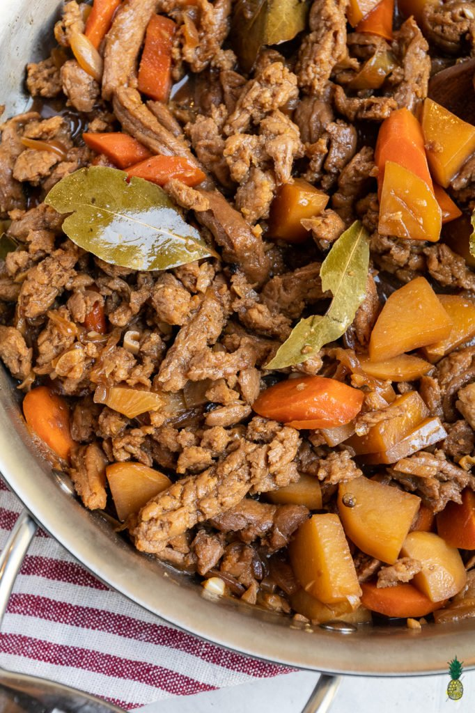

Vegan Filipino Adobo

By Sweetsimplevegan
A veganized version of a Filipino dish that is packed with bold flavors and is spot on to the classic recipe. This vegan filipino chicken adobo is easy to make and will be ready in about 30 minutes. With a marinade of vinegar, black peppercorns, bay leaves, and tamari, it has the perfect balance of sweet and sour, with a kick!
INGREDIENTS:
- 2 cups of soy curls
- 4 cups vegan chicken broth( (or vegetable broth of choice)
- 1/4 cup liquid refined coconut oil* (or cooking oil of choice)
- 5 bay leaves
- 1/2 teaspoon black peppercorns
- 5 cloves garlic, finely minced
- 1 small (1 1/2 cups) white onion, finely diced
- 2 small (2 cups) potatoes, peeled and cut into medium-sized pieces
- 1 medium (1 cup) carrot, peeled and cut into medium-sized pieces
- 1/4 cup apple cider vinegar
- 1 inch fresh ginger, sliced (optional)
- 4-5 tablespoons light brown sugar
STEPS
- Prepare the soy curls. Add the broth to a small pot and bring to a boil. Remove the pot from heat. Add the soy curls into the pot and use a spoon to mix and make sure that every piece is covered. Allow the soy curls to rehydrate for 10 minutes.
- In the meantime, set a medium sauté pan over medium heat and add in the oil. Once heated, add in the bay leaves and black peppercorns, and cook for 1 minute.
- Next add in the minced garlic and continue cooking until golden brown, being sure not to burn it. Add in the white onion and cook for 1 minute more, then add in the potatoes and carrots and mix until well combined. Adjust the heat to medium-low and cover the pot. Allow the vegetables to cook through for about 5 minutes.
- After 5 minutes, mix the soy curls (with the broth) into the pan along with the soy sauce, vinegar and ginger. Push the mixture to the side with a cooking utensil and mix 4 tablespoons of brown sugar into the liquid portion until mostly dissolved, then mix through.
- Bring the mixture to boil over medium heat, cover the pot again and allow it to simmer over medium heat. Simmer for 25-30 minutes, or until the potatoes are cooked through. Adjust seasoning to taste. We added in 1 more tablespoon of brown sugar.
- Remove from heat and cool before serving. If you would like, you can remove the bay leaves and peppercorns as best you can, but my family leaves them in and we just eat around them.
- Serve with brown rice or white rice and enjoy!
Main Page